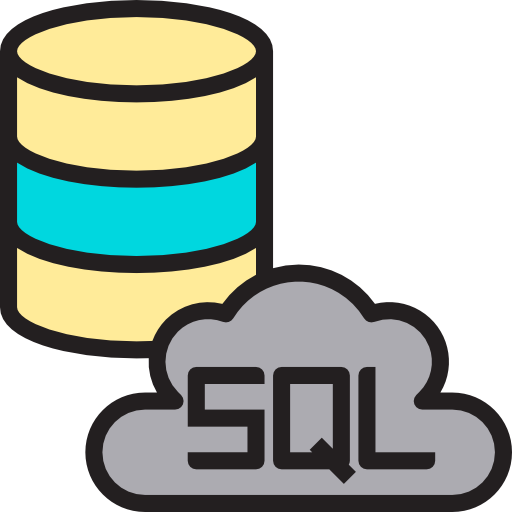

Currículo
Quem sou eu?

Meu nome é Joana Maria Luz de Sá, tenho 21 anos, estou desempregada, moro em Blumenau - Santa Catarina. Atualmente estou no terceiro semestre no curso Técnico em desenvolvimento de sistemas no Senai Blumenau e em busca de um estágio na área de programação.
Meus aprendizados
Por enquanto estou no início, mas é meu sonho ter uma carreira na área de programação, tenho muita dedicação e desejo por aprendizagem. Cada dia que passa estou aderindo mais conhecimento de video, exercícios online e no meu curso técnico. Estou aberta aprender qualquer linguagem como uma forma de conhecimento para próprio e para carreira.
Experiencias
- 2018 - 2019 | Empacotadora - Cooper Gloria
- 2021 - 2021 | Trabalho manual - SG confecções
Não tenho experiencia na área de programação, estou em busca do primeiro emprego na área de programação, com o objetivo de iniciar minha carreira profissional e, com isso, colaborar para o aumento dos resultados organizacionais desta empresa.
Minhas especialidades
 - Pytron
- Pytron - Java
- Java - HTML
- HTML-
 - CSS
- CSS -  - MySQL
Educação
Curso tecnico em desenvolvimento de sistemas | Centro Universitário SENAI Blumenau
Inicio 2021 até 2023 | Cursando
Curso com certificados
- HTML e CSS Modelo 1 - Curso em Video
- MySQL - Curso em video